오늘의 과제

박사주판봇이 실패작을 가져왔다. 하나씩 원인을 찾아보자.

주판봇일부러 만든 겁니다! 정말입니다!

초파리 연구원순서대로 보면 금방 찾아. 뼈대부터.

X2베레모 아래 이마 선부터 확인하겠습니다.
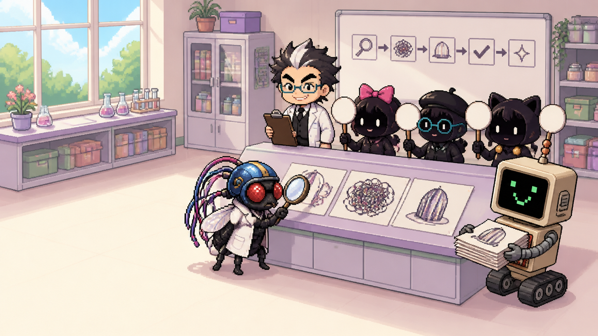
주판봇이 변장 실패작 여덟 장을 가져왔습니다. 평가단은 점수 대신 원인을 맞힙니다. 머리카락 그림의 실패는 뼈대·다발·색·움직임·고정 가운데 하나가 빠진 자리입니다.
그림 실력·코드·수식을 몰라도 됩니다. 실험을 눌러 보며 따라오세요.
① 뼈대 → ② 다발·흐름 → ③ 색·윤기 → ④ 움직임 → ⑤ 고정·가림 영역, 큰 원리에서 작은 표현으로 내려갑니다
요리가 맛없을 때 장식보다 재료와 간부터 확인합니다.
그림 검수표에 이 다섯 항목을 순서대로 적어 두면, 수정 요청서도 '① 이마 선을 2cm 뒤로'처럼 원리 단위로 쓸 수 있습니다.


f1·f2는 ① 뼈대, f3·f4는 ② 다발·흐름, f5는 ③ 색·윤기, f6·f7은 ④ 움직임, f8은 ⑤ 고정·가림 영역에서 처음 걸립니다.
처음 걸린 항목을 고치면 뒤 항목은 저절로 맞는 경우가 많습니다. 예를 들어 다발을 고치면 윤기 띠도 다발마다 끊겨 자연스러워집니다.
아래 실패 카드에서 증상 → 원인 → 원리 → 고치는 조각을 확인하세요.
AI 그림의 머리가 어색한데 어디가 틀렸는지 모르겠습니다. 어디서 시작할까요?
① 이마 선과 부피부터 봅니다. 머리 원형을 연필로 겹쳐 그려 보면 부피와 가르마 위치가 바로 보입니다.
그림마다 증상을 보고 원인을 고른 뒤, 연결된 원리와 고치는 프롬프트 조각을 확인합니다.
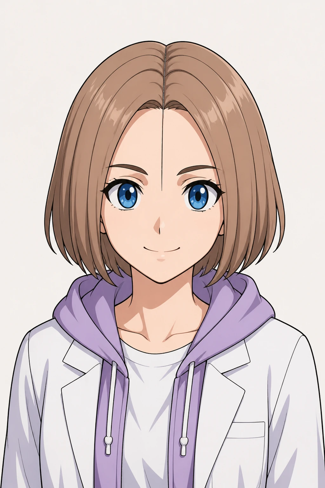
증상가르마 선이 앞머리를 지나 이마 위까지 그어져, 이마가 갈라진 것처럼 보입니다.
연결된 원리1부 1단계 이마 선·가르마
the parting starts behind the hairline and is hidden among the bangs, no line on the forehead
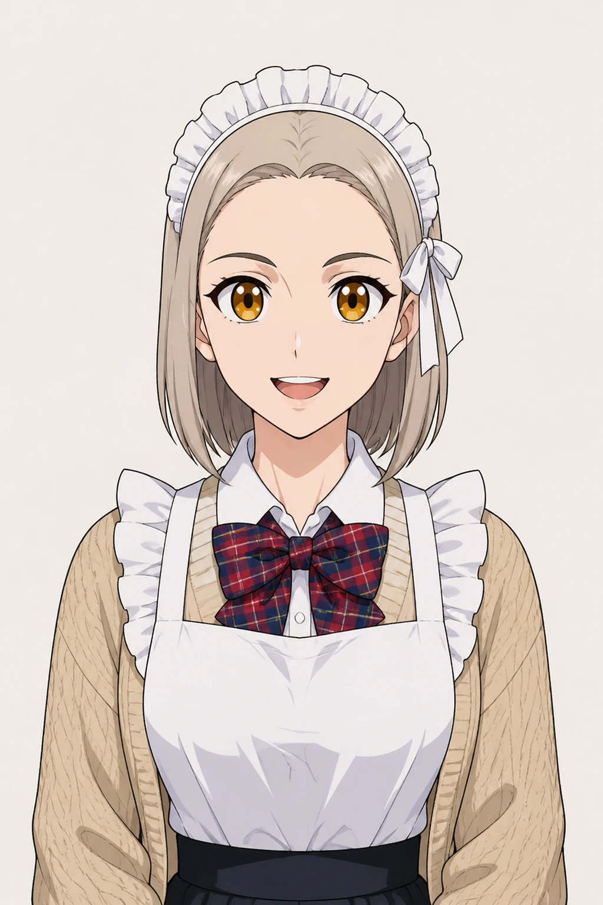
증상가발 윤곽이 머리뼈 모양을 그대로 따라가, 머리가 작고 납작하며 수영모를 쓴 것 같습니다.
연결된 원리1부 2단계 부피
natural volume, the hair sits slightly away from the scalp, rounded crown
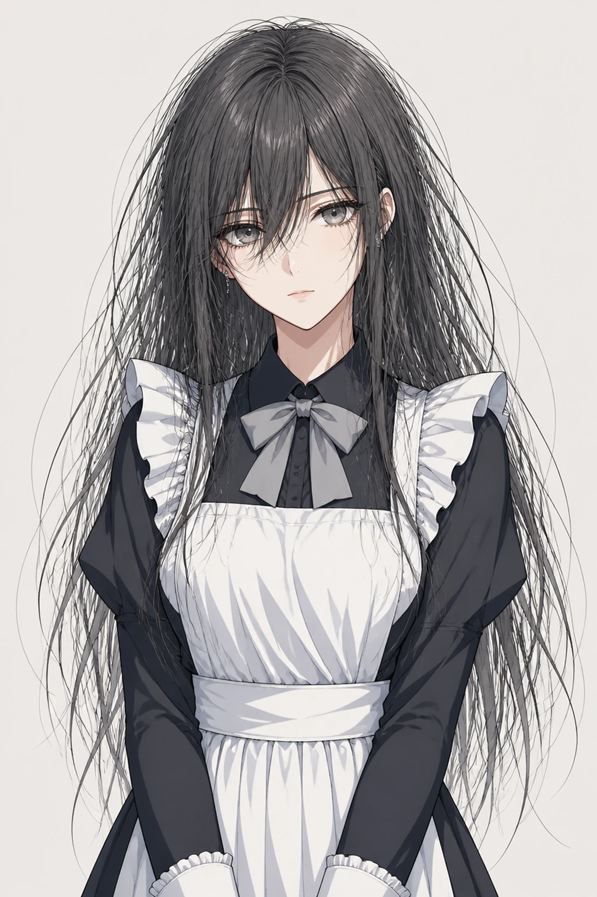
증상머리카락이 가는 선 수백 개로 덮여 덩어리와 흐름이 보이지 않고, 회색 철사 뭉치 같습니다.
연결된 원리2부 1단계 다발
hair drawn as soft ribbon-like locks with only a few fine strands inside each lock
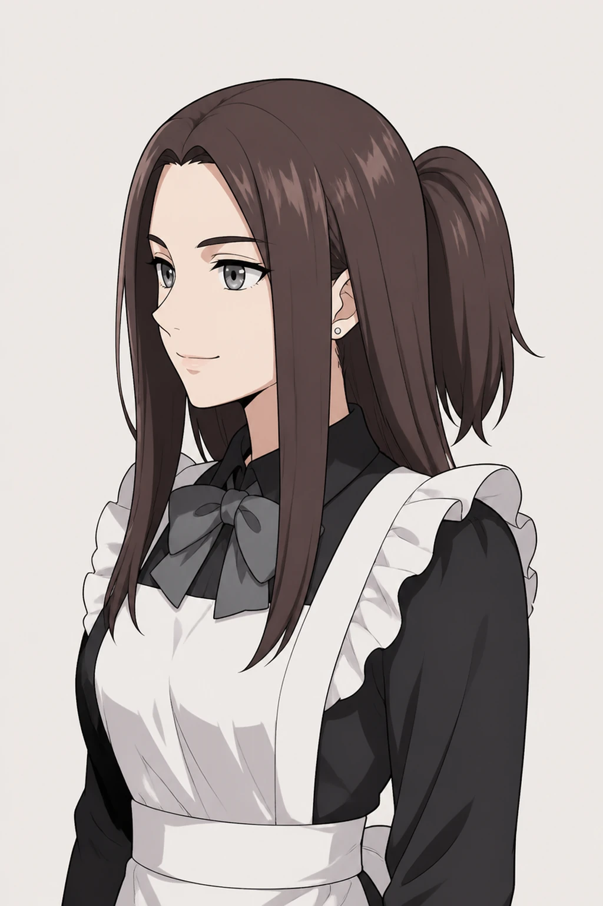
증상꼬리는 있는데 이마·옆머리의 다발이 묶은 곳을 향하지 않고 아래로 흘러, 꼬리를 나중에 붙인 것 같습니다.
연결된 원리2부 3단계 묶은 머리
all hair is pulled back toward the hair tie, visible tension lines from the hairline to the tie
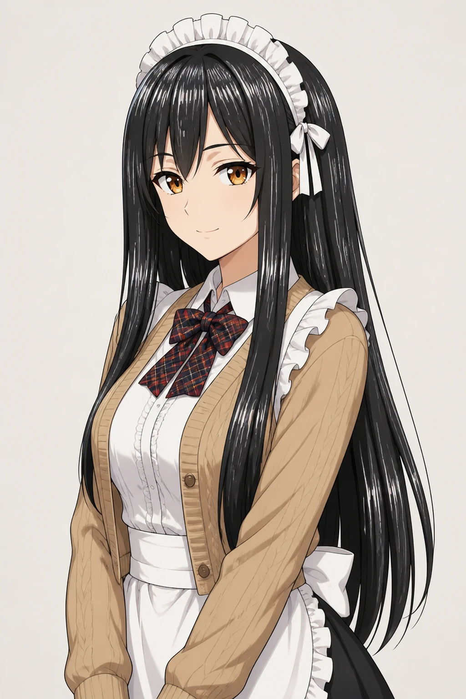
증상흰 윤기가 머리카락 방향을 따라 세로 줄로 그어져, 머리가 둥글지 않고 플라스틱 줄무늬처럼 보입니다.
연결된 원리3부 2단계 윤기 띠
a single glossy highlight band wraps around the head across the hair flow, broken slightly at each lock
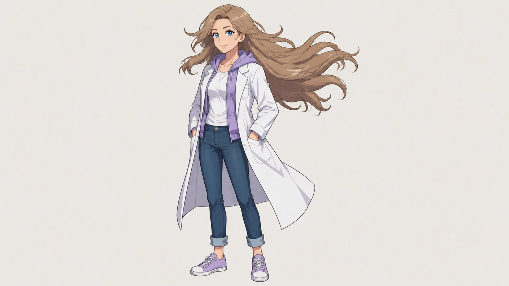
증상뒷머리는 오른쪽, 앞머리는 왼쪽으로 날려 바람이 두 개 부는 것 같습니다.
연결된 원리4부 1단계 바람
strong wind from the left, all hair including the bangs blows to the right
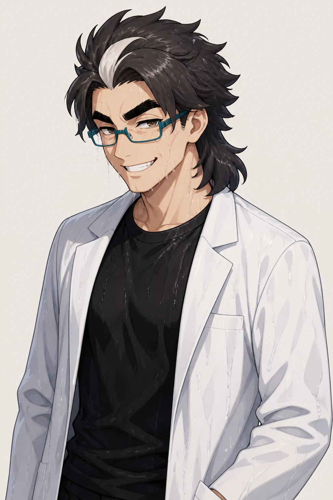
증상얼굴과 옷은 젖었는데 머리카락은 부풀어 있고 다발이 굵습니다. 물방울만 몇 개 붙어 있습니다.
연결된 원리4부 3단계 손과 물
soaking wet hair, flattened, separated into many thin clumps that cling to the forehead and neck, water dripping from the tips
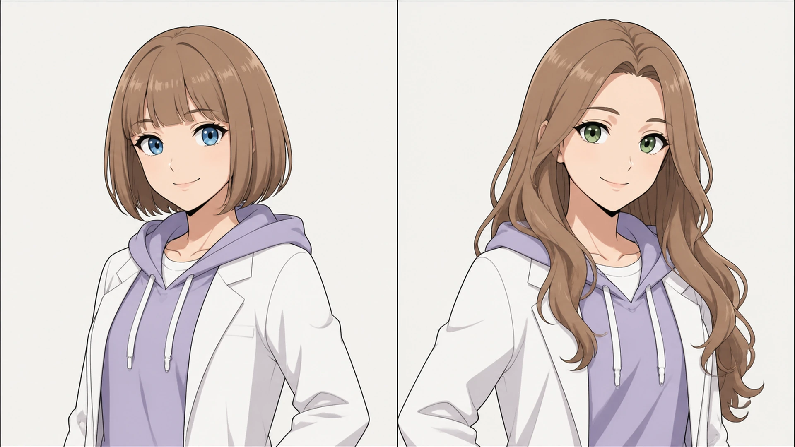
증상머리 모양은 원하는 가발로 바뀌었지만, 눈 색이 파랑에서 초록으로 바뀌고 얼굴형도 달라졌습니다.
연결된 원리5부 2단계 가림 영역
inpaint only the hair region, keep her face, big bright blue eyes and expression unchanged
'twin tails', 'pigtails', 'hair buns with ribbons' 같은 머리 이름을 겹쳐 쓰면, 도구는 얼굴을 둥글고 작게, 눈을 크게 그려 인물이 어려 보이게 만들기 쉽습니다. 연구실의 모델은 모두 20대 성인입니다.
막는 방법은 머리 이름 대신 모양을 적는 것입니다. 'two low ponytails tied at the nape, shoulder-length'처럼 묶는 높이·길이·소재를 말하고, 고정 조각에 'an adult woman in her early twenties, adult proportions'를 넣습니다.
머리 모양은 나이를 바꾸는 장치가 아닙니다. 인상은 1부 3단계의 길이·끝 방향으로 조절하고, 나이는 고정 조각으로 지킵니다.
연결된 원리5부 1단계 머리 문장
이 부에서 배운 원리를 그림 생성 AI(Genspark 등)로 직접 확인합니다. A는 이 페이지 그림을 실제로 만든 프롬프트, B는 원리를 하나 빼거나 바꾼 비교용 문장입니다.
참고 그림 내려받기: haru_anime_base · sia_anime_base · moa_anime_base · haru_sheet · sia_sheet · moa_sheet · doctor_sheet · fruitfly_sprites_6 · jupanbot_ref_genspark_v0 · pixel_style_ref_prev_cover
실패 그림 f2에 고치는 조각을 넣어 다시 만들고, 부피가 돌아왔는지 봅니다.
첨부: 해당 캐릭터의 refs/*_anime_base.png (박사는 refs/doctor_sheet.png)
Illustration, vertical 2:3. Art style: high-quality anime illustration, clean confident lineart, two-tone cel shading, natural adult proportions. Match the attached reference images exactly (face, hair, colors, accessories). All characters are adults in their early twenties (the Professor is an adult man in his thirties, normal proportions, not chibi); modest outfits exactly as described. This is an intentional FAILURE example for a teaching page: draw the mistake described below clearly and convincingly, while everything else stays correct. Head and shoulders of Moa (adult maid intern in her early twenties, amber eyes) wearing a wig: a shoulder-length ash-beige wig; she keeps her own face, amber eyes, outfit and the white frilled maid headband with the white ribbon over her LEFT ear placed on top of the wig, wearing camel knit cardigan over a white blouse, red and navy plaid bow tie, white frilled apron, black skirt. Intentional mistake: the wig hugs the skull exactly like a swimming cap with zero volume, so the head looks small and flat and the face looks too big. Plain off-white studio background. No text, no letters, no numbers, no speech bubbles, no logos, no watermark, no revealing clothing, not childlike, no school uniform, not resembling any famous anime character.
Same character and pose as the attached failure image. Change only: natural volume, the hair sits slightly away from the scalp, rounded crown. Keep her face and the white ribbon over her LEFT ear. Still no text.
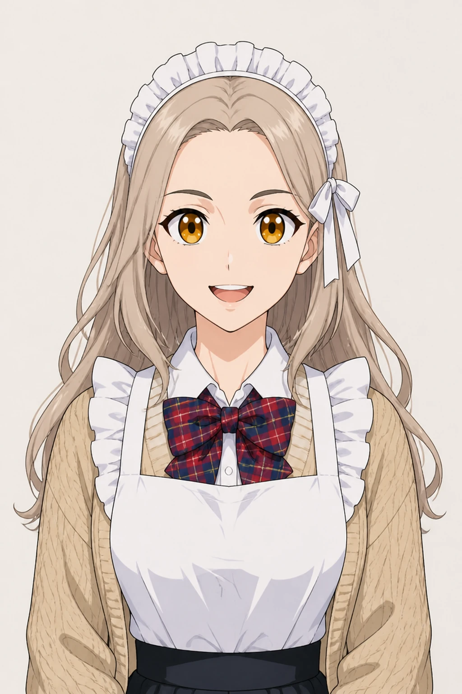
실제 결과: B는 부피가 돌아와 머리가 한 둘레 커졌고 얼굴 크기와 왼쪽 리본은 그대로입니다. 다만 도구가 길이까지 어깨 아래 웨이브로 바꿨습니다. 한 번에 하나만 바꾸라고 해도 결과는 매번 다르니 꼭 직접 확인하세요.
실패 그림 f8을 가림 영역과 고정 조각으로 다시 만들어, 얼굴을 지키는지 봅니다.
첨부: 해당 캐릭터의 refs/*_anime_base.png (박사는 refs/doctor_sheet.png)
Illustration, wide 16:9. Art style: high-quality anime illustration, clean confident lineart, two-tone cel shading, natural adult proportions. Match the attached reference images exactly (face, hair, colors, accessories). All characters are adults in their early twenties (the Professor is an adult man in his thirties, normal proportions, not chibi); modest outfits exactly as described. This is an intentional FAILURE example for a teaching page: draw the mistake described below clearly and convincingly, while everything else stays correct. Two panels side by side, upper body. Left: Haru (adult lab assistant in her early twenties, big bright blue eyes) wearing a wig: a chin-length light chestnut-brown bob with straight bangs; she keeps her own face, big bright blue eyes and outfit; the wig completely covers her usual pink hair, buns and navy streaks, wearing lavender hoodie with white drawstrings over a white t-shirt, open white knee-length lab coat, rolled-up jeans, lavender sneakers. Right: a young adult woman with a waist-length soft wavy light-brown wig, same lavender hoodie and lab coat. Intentional mistake: the right panel was supposed to be Haru with only a new wig, but the face shape is different and the eyes are green instead of blue — she has become a different person. Plain off-white studio background. No text, no letters, no numbers, no speech bubbles, no logos, no watermark, no revealing clothing, not childlike, no school uniform, not resembling any famous anime character.
(부분 수정 기능에서) 머리카락만 칠하고 얼굴·눈썹·눈은 비운 채 아래 문장을 넣는다: waist-length soft wavy light brown wig, keep her face, big bright blue eyes and expression unchanged, adult woman in her early twenties.
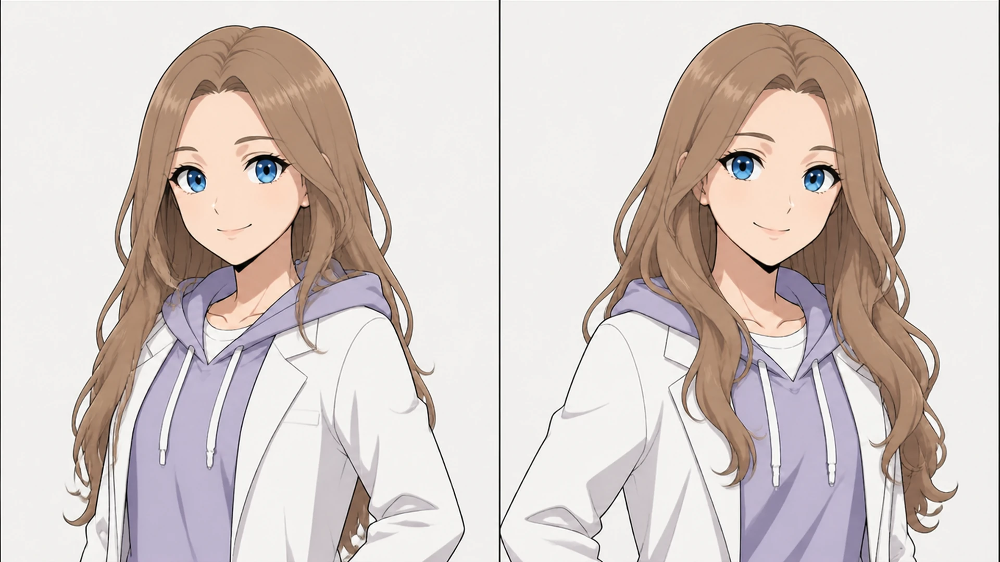
실제 결과: B는 두 그림 모두 하루의 파란 눈과 얼굴형으로 돌아왔습니다. 다만 왼쪽의 원래 단발 그림까지 긴 가발로 바뀌었습니다. 부분 수정 기능이 아니라 그림 전체를 새로 만든 결과로 보입니다. 실제 작업에서는 머리 영역만 칠해서 고쳐야 합니다.
| 항목 | 주판봇 | 초파리 |
|---|---|---|
| 맞힌 원인(8개 중) | 5 | 8 |
| 원리 연결 | 6 | 9 |
| 고치는 조각 | 7 | 8 |
| 합계 | 18 | 25 |


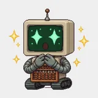

점수는 이야기 속 예시입니다. 실제 그림을 평가한 값이 아닙니다.
| 주제 | 한 줄 | 작업에서는 |
|---|---|---|
| 진단 순서 | 뼈대 → 다발·흐름 → 색·윤기 → 움직임 → 고정·가림 | 처음 걸리는 곳부터 |
| 뼈대 실패 | f1 가르마·f2 헬멧 | 이마 선·부피 |
| 흐름 실패 | f3 철사·f4 묶은 점 | 다발·모이는 점 |
| 색·움직임·고정 | f5 윤기 줄·f6 바람 둘·f7 뽀송·f8 얼굴 바뀜 | 띠·방향 하나·무게·가림 영역 |

이 페이지에 나온 개념·방법·비유·쓰임을 모았습니다. 검색하고, "설명 보러 가기"로 본문에 돌아갑니다.
지식 색인을 출처와 함께 파일로 내려받습니다. 서지 관리는 BibTeX·RIS, 온톨로지 편집은 Turtle, 그래프 도구는 CSV, 여러 페이지 합치기는 kg.json입니다.